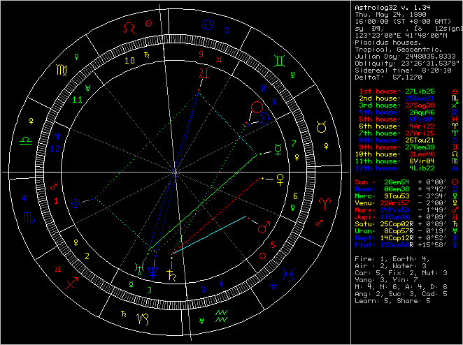

HDU4040. Astrolabe
内存限制：2000/1000 MS (Java/Others) 时间限制：32768/32768 K (Java/Others)
题目描述
As we all know, astrology speaks of zodiac times to times.
Astrology is a knowledge of stars and mysticism. Its object is many types of astrolabic charts that indicate the astronomical situations of a certain time and position.
Among astrology there are mainly about 3 branches of it, namely Natal Astrology, Forecast Astrology and Horary Astrology.
In this problem we will talk about Natal Astrology, which is use to analyze and foresee one's soul, and do something to benefit him or her on destiny in advance.
Of course astrology is much different from the usually talked 12 signs of zodiac that just to entertain people.
Basically, there are five kinds of essential factors in analyzing.
1. Stars:
In the charts there are mainly 10 major stars (although there are also some very important asteroids, but here we don't have to concern about them), namely:
the Sun
the Moon
the Mercury
the Venus
the Mars
the Jupiter
the Saturn
the Uranus
the Neptune
the Pluto
2. Signs:
As you know, the signs are the 12 constellations in zodiac that we usually talk about in daily life, namely in order:
Aries
Taurus
Gemini
Cancer
Leo
Virgo
Libra
Scorpio
Sagittarius
Capricorn
Aquarius
Pisces
You can see the picture below to get more details about that.
The outer ring shows the 12 constellations in zodiac that circle in order.
Each star is represented by a small unique logo on the chart.
And the lines between each two stars are the so-called aspects that will be explained below:

3. Phases:
An astrolabic chart has all the 12 signs that lie in circle one by one on the boundary, and each one will have a range of 30 degrees.
So, in common, that's a range of 360 degrees, a circle surrounds the charts.
We will take the plane-zodiac, and project the 10 stars onto it, then we choose geocentric (the center of earth) as the center, and zoom each distances between the 10 stars and the center to make them the same, thus we will have the 10 stars on the boundary of the charts.
So, each star will lies in a certain degree of the charts.
For example, in the charts of September 23rd, the Sun will lies between Libra's 0 degree and it's 1 degree(Libra starts from that day).
However, the terms of orbit of each star aren't same, and the velocity of a star isn't same at different times.
4. Aspects:
The two stars' phases may have some special relation if the difference between them is special.
For example, if the 2 stars lie in a same position, their difference is 0 degree, this is a important aspect called Conjunct.
And if the 2 stars' phases are 120 degree in difference, also an important aspect called Trine is between them.
There are many classical aspects in the astrology, but mainly 5 of them if we make it simple, namely:
0 degree -- Conjunct
60 degree -- Sextile
90 degree -- Square
120 degree -- Trine
180 degree -- Opposite
There meanings are according to the explanation above of Conjunct and Trine respectively.
But for most astrolabes, the differences between each pairs of stars are not that accurate, so small deviations are permissible.
And in this problem, we assume that Conjunct can tolerate a deviation of at most 5 degrees, 4 for Trine, 4 for Square, 3 for Opposite and 3 for Sextile.
5 .Rise, Fall, Exalt & Debilitate
Each sign has their unique meaning, and different stars lying on different signs will have different efficient, sometimes good, sometimes bad in general.
There are mainly 4 specials, namely Rise, Fall, Exalt & Debilitate.
Rise means the star's power will be strongen in this sign, and Fall means its power will be weaken in this sign vice versa.
Exalt means the star will act well in this sign, and Debilitate vice versa means it'll act ill in this sign.
Of course, to each star some signs are just normal for it, so there won't be any special efficient for it when it's on those signs.
A fact that must be shown to you is that, each star Rise and Fall in opposite signs, and it Exalt and Debilitate also in opposite ones.
Now let's see what's the different efficient for signs and stars in details:
Sun, Rise in Leo, Fall in Aquarius, Exalt in Aries, Debilitate in Libra,
Moon, Rise in Cancer, Fall in Capricorn, Exalt in Taurus, Debilitate in Scorpio,
Mercury, Rise in both Gemini and Virgo, Fall in both Sagittarius and Pisces, Exalt in Aquarius, Debilitate in Leo,
Venus, Rise in both Taurus and Libra, Fall in both Scorpio and Aries, Exalt in Pisces, Debilitate in Virgo,
Mars, Rise in both Aries and Scorpio, Fall in both Libra and Taurus, Exalt in Capricorn, Debilitate in Cancer,
Jupiter, Rise in both Sagittarius and Pisces, Fall in both Gemini and Virgo, Exalt in Cancer, Debilitate in Capricorn,
Saturn, Rise in both Capricorn and Aquarius, Fall in both Cancer and Leo, Exalt in Libra, Debilitate in Aries,
Uranus, Rise in Aquarius, Fall in Leo, Exalt in Scorpio, Debilitate in Taurus,
Neptune, Rise in Pisces, Fall in Virgo, Exalt in Sagittarius, Debilitate in Gemini,
Pluto, Rise in Scorpio, Fall in Taurus, Exalt in Virgo, Debilitate in Pisces.
So, every stars with their aspects to others will show energy, and they show it through the aspects and their own phases and signs.
The whole of them will form a energy network that affect the Natal chart's owner's soul deeply.
So, I shall give you the mechanism of the formation of energy from the charts.
To make it simple, at beginning, each star has 5 points of energy, and 3 points of capacity.
For each star, if it has some special efficient due to its own sign, then its energy and capacity may change.
In details:
If a star Rise, its energy will increase by 3 points, vice versa decrease by 3 points if it Fall.
And if it Exalt, its capacity increase by 2 points, vice versa decrease by 2 points if it Debilitate.
Then come from those aspects.
First we should consider the 4 aspects mentioned above except Conjunct.
An aspect of Sextile will increase both two stars' capacity that forms it by 1 point.
An aspect of Square will increase the two ones' capacity by 2 points, but decrease their energy by 3 points simultaneously.
An aspect of Trine will increase the two ones' energy by 3 points, but decrease their capacity by 2 points simultaneously.
An aspect of Opposite will just decrease the two ones' energy by 1 points.
After this, if any star's energy becomes negative, then we should change it to 0 points.
Then come the faculty of each aspect.
Each aspect's faculty that it formed by star A and B is defined as max{0,capacity[A]+capacity[B]+2};
At last, we should consider the aspects of Conjunct.
For each one of Conjunct, just make the aspect's faculty to infinite.
So, a network is finally built.
The energy is produced by the following methods.
Two stars that make an aspect can burn same points (marked as x points) simultaneously because of this aspect, which is so called “the effect of the aspect”. The system should guarantee that x is less or equal to the faculty of the aspect.
The energy burned by a star (marked as y points) is the sum of all the effect of aspects that involves this particular star. The system should guarantee that y is less or equal to the energy of the star itself.
The energy produced by the network is the sum of energy burned by each star according to the rules above.
Every owner of his charts could make the most benefit of its network, thus can make his destiny better, and the goal of this problem is to calculate the maximum total energy a chart could form.
Astrology is a knowledge of stars and mysticism. Its object is many types of astrolabic charts that indicate the astronomical situations of a certain time and position.
Among astrology there are mainly about 3 branches of it, namely Natal Astrology, Forecast Astrology and Horary Astrology.
In this problem we will talk about Natal Astrology, which is use to analyze and foresee one's soul, and do something to benefit him or her on destiny in advance.
Of course astrology is much different from the usually talked 12 signs of zodiac that just to entertain people.
Basically, there are five kinds of essential factors in analyzing.
1. Stars:
In the charts there are mainly 10 major stars (although there are also some very important asteroids, but here we don't have to concern about them), namely:
the Sun
the Moon
the Mercury
the Venus
the Mars
the Jupiter
the Saturn
the Uranus
the Neptune
the Pluto
2. Signs:
As you know, the signs are the 12 constellations in zodiac that we usually talk about in daily life, namely in order:
Aries
Taurus
Gemini
Cancer
Leo
Virgo
Libra
Scorpio
Sagittarius
Capricorn
Aquarius
Pisces
You can see the picture below to get more details about that.
The outer ring shows the 12 constellations in zodiac that circle in order.
Each star is represented by a small unique logo on the chart.
And the lines between each two stars are the so-called aspects that will be explained below:
3. Phases:
An astrolabic chart has all the 12 signs that lie in circle one by one on the boundary, and each one will have a range of 30 degrees.
So, in common, that's a range of 360 degrees, a circle surrounds the charts.
We will take the plane-zodiac, and project the 10 stars onto it, then we choose geocentric (the center of earth) as the center, and zoom each distances between the 10 stars and the center to make them the same, thus we will have the 10 stars on the boundary of the charts.
So, each star will lies in a certain degree of the charts.
For example, in the charts of September 23rd, the Sun will lies between Libra's 0 degree and it's 1 degree(Libra starts from that day).
However, the terms of orbit of each star aren't same, and the velocity of a star isn't same at different times.
4. Aspects:
The two stars' phases may have some special relation if the difference between them is special.
For example, if the 2 stars lie in a same position, their difference is 0 degree, this is a important aspect called Conjunct.
And if the 2 stars' phases are 120 degree in difference, also an important aspect called Trine is between them.
There are many classical aspects in the astrology, but mainly 5 of them if we make it simple, namely:
0 degree -- Conjunct
60 degree -- Sextile
90 degree -- Square
120 degree -- Trine
180 degree -- Opposite
There meanings are according to the explanation above of Conjunct and Trine respectively.
But for most astrolabes, the differences between each pairs of stars are not that accurate, so small deviations are permissible.
And in this problem, we assume that Conjunct can tolerate a deviation of at most 5 degrees, 4 for Trine, 4 for Square, 3 for Opposite and 3 for Sextile.
5 .Rise, Fall, Exalt & Debilitate
Each sign has their unique meaning, and different stars lying on different signs will have different efficient, sometimes good, sometimes bad in general.
There are mainly 4 specials, namely Rise, Fall, Exalt & Debilitate.
Rise means the star's power will be strongen in this sign, and Fall means its power will be weaken in this sign vice versa.
Exalt means the star will act well in this sign, and Debilitate vice versa means it'll act ill in this sign.
Of course, to each star some signs are just normal for it, so there won't be any special efficient for it when it's on those signs.
A fact that must be shown to you is that, each star Rise and Fall in opposite signs, and it Exalt and Debilitate also in opposite ones.
Now let's see what's the different efficient for signs and stars in details:
Sun, Rise in Leo, Fall in Aquarius, Exalt in Aries, Debilitate in Libra,
Moon, Rise in Cancer, Fall in Capricorn, Exalt in Taurus, Debilitate in Scorpio,
Mercury, Rise in both Gemini and Virgo, Fall in both Sagittarius and Pisces, Exalt in Aquarius, Debilitate in Leo,
Venus, Rise in both Taurus and Libra, Fall in both Scorpio and Aries, Exalt in Pisces, Debilitate in Virgo,
Mars, Rise in both Aries and Scorpio, Fall in both Libra and Taurus, Exalt in Capricorn, Debilitate in Cancer,
Jupiter, Rise in both Sagittarius and Pisces, Fall in both Gemini and Virgo, Exalt in Cancer, Debilitate in Capricorn,
Saturn, Rise in both Capricorn and Aquarius, Fall in both Cancer and Leo, Exalt in Libra, Debilitate in Aries,
Uranus, Rise in Aquarius, Fall in Leo, Exalt in Scorpio, Debilitate in Taurus,
Neptune, Rise in Pisces, Fall in Virgo, Exalt in Sagittarius, Debilitate in Gemini,
Pluto, Rise in Scorpio, Fall in Taurus, Exalt in Virgo, Debilitate in Pisces.
So, every stars with their aspects to others will show energy, and they show it through the aspects and their own phases and signs.
The whole of them will form a energy network that affect the Natal chart's owner's soul deeply.
So, I shall give you the mechanism of the formation of energy from the charts.
To make it simple, at beginning, each star has 5 points of energy, and 3 points of capacity.
For each star, if it has some special efficient due to its own sign, then its energy and capacity may change.
In details:
If a star Rise, its energy will increase by 3 points, vice versa decrease by 3 points if it Fall.
And if it Exalt, its capacity increase by 2 points, vice versa decrease by 2 points if it Debilitate.
Then come from those aspects.
First we should consider the 4 aspects mentioned above except Conjunct.
An aspect of Sextile will increase both two stars' capacity that forms it by 1 point.
An aspect of Square will increase the two ones' capacity by 2 points, but decrease their energy by 3 points simultaneously.
An aspect of Trine will increase the two ones' energy by 3 points, but decrease their capacity by 2 points simultaneously.
An aspect of Opposite will just decrease the two ones' energy by 1 points.
After this, if any star's energy becomes negative, then we should change it to 0 points.
Then come the faculty of each aspect.
Each aspect's faculty that it formed by star A and B is defined as max{0,capacity[A]+capacity[B]+2};
At last, we should consider the aspects of Conjunct.
For each one of Conjunct, just make the aspect's faculty to infinite.
So, a network is finally built.
The energy is produced by the following methods.
Two stars that make an aspect can burn same points (marked as x points) simultaneously because of this aspect, which is so called “the effect of the aspect”. The system should guarantee that x is less or equal to the faculty of the aspect.
The energy burned by a star (marked as y points) is the sum of all the effect of aspects that involves this particular star. The system should guarantee that y is less or equal to the energy of the star itself.
The energy produced by the network is the sum of energy burned by each star according to the rules above.
Every owner of his charts could make the most benefit of its network, thus can make his destiny better, and the goal of this problem is to calculate the maximum total energy a chart could form.
输入格式
A number T indicates the test cases at the first line.
Then for each test case, a line formed like 'STAR SIGN DEGREE' will be given, but the order maybe variable.
Please see the sample input for details.
Then for each test case, a line formed like 'STAR SIGN DEGREE' will be given, but the order maybe variable.
Please see the sample input for details.
输出格式
A number that indicates the maximum total energy which could be burned from the network.
样例
样例输入
2
Sun Gemini 2
Moon Gemini 0
Mercury Taurus 9
Venus Aries 22
Mars Pisces 24
Jupiter Cancer 11
Saturn Capricorn 25
Uranus Capricorn 8
Neptune Capricorn 14
Pluto Scorpio 15
Mercury Libra 13
Venus Virgo 13
Jupiter Gemini 5
Uranus Sagittarius 27
Saturn Sagittarius 27
Moon Sagittarius 17
Mars Aries 0
Pluto Scorpio 11
Sun Libra 22
Neptune Capricorn 7样例输出
50
10
Hint
For the first case,
The chart is as below:
